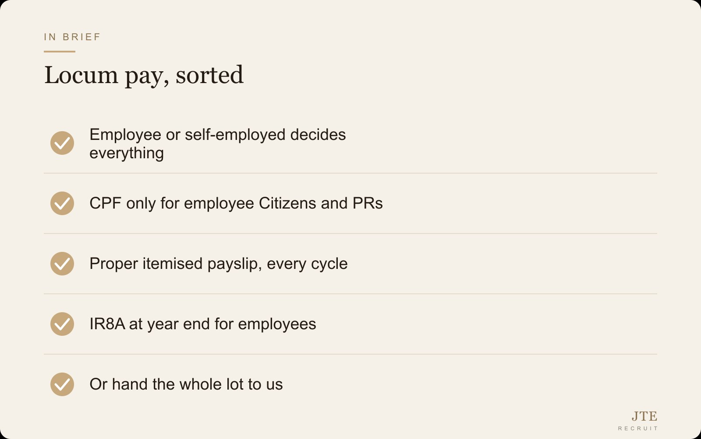

Locums keep a lot of clinics and wards running. A doctor covers a weekend, a nurse fills a gap, a sonographer comes in for two sessions a week. Easy to roster. The messy part shows up later, when someone has to actually pay them, and nobody is quite sure who owes CPF, who issues the payslip, or whether that person counts as an employee at all.
I get asked this a lot by clinic owners and nursing managers. So here is the plain version, and the easy way out if you would rather not deal with any of it.
Is a locum your employee or self-employed?
This is the question everything hangs on, and the honest answer is "it depends on the arrangement, not the word locum". If you control the hours, the place, and the way the work is done, and the person is paid for their time rather than for a result they deliver independently, that looks a lot like employment, whatever you call it on paper.
If instead they genuinely run their own practice, carry their own cover, invoice you, and take sessions from several places on their own terms, that leans self-employed. The label on the chat message does not decide it. The substance does.
Why it matters: it changes who owes CPF, who issues the payslip, what you report to IRAS at year end, and who carries the risk if it is wrong. Worth getting right before the first payment, not after an audit.

Who actually owes CPF on a locum?
CPF is only due for Singapore Citizens and Permanent Residents who are your employees. It is not payable for a genuinely self-employed contractor, and it is not payable for foreigners on work passes at all.
So the CPF answer falls out of the two things above: is this person an employee, and are they a Citizen or PR? If yes to both, CPF contributions are due on their wages and you, as the employer, have to make them on time. If they are truly self-employed, you do not pay employer CPF, though a self-employed person may have their own MediSave obligations to handle themselves.
The rates and ceilings change, so confirm the current figures with the CPF Board before you run a number. The principle does not change: employee plus Citizen or PR equals CPF is your job.
The bits people forget until year end
Even a simple locum arrangement comes with paperwork that only bites later. A proper itemised payslip is required for employees, every pay cycle, not a bank transfer with a note. Employment records have to be kept. And at year end, employees go onto your IR8A submission to IRAS.
None of this is hard on its own. It just adds up when you are a clinic owner who also happens to see patients all day. The locum is meant to lighten your load, not hand you a second admin job.
Why "just pay them cash" goes wrong
The shortcut most people reach for is to treat every locum as self-employed and pay a flat amount, no CPF, no payslip. Sometimes that is correct. Often it is not, and the gap only surfaces when someone looks closely, a CPF query, a tax clearance, a dispute over a missed session.
Getting it wrong is not a small thing. Unpaid CPF has to be made good, with penalties. Misclassifying an employee as a contractor can come back on you. The time you saved on admin, you pay back with interest. Cleaner to set it up right once.
Or hand the whole payroll side to us
Here is the easy way out. You keep booking the locums you want, the people you trust, on the sessions you need. We become the employer of record, so the employment sits cleanly with us, and we run the payroll, CPF where it is due, payslips, records, and the year-end filings.
You get one tidy arrangement instead of a pile of individual pay runs and a nagging feeling that something is not quite filed right. For most clinics we take on, this runs at near zero cost, because we run payroll free for the first year. If that sounds like less of a headache, that is the point.
The takeaway A locum saves you time on the floor, so do not let it cost you that time back in payroll admin, set it up clean or let someone run it for you.
Frequently asked questions
Do I pay CPF for a locum doctor or nurse?
Only if they are your employee and a Singapore Citizen or PR. CPF is not due for a genuinely self-employed locum, and not for foreigners on work passes. Confirm current rates with the CPF Board.
Is a locum automatically self-employed?
No. The word locum decides nothing. If you control the hours, place and manner of work and pay for their time, that looks like employment regardless of the label. The arrangement decides it, not the title.
Do locums need a payslip?
If they are employees, yes, a proper itemised payslip every pay cycle, plus kept employment records. A bank transfer with a note does not meet the requirement.
What happens at year end?
Employees go onto your IR8A submission to IRAS. A genuinely self-employed locum reports their own income. Getting the classification right during the year avoids a scramble in filing season.
Can you handle locum payroll for us?
Yes. We can be the employer of record, run payroll, CPF, payslips, records and year-end filings, while you keep booking the locums you want. For most clinics this is near zero cost in the first year.
We only use one locum a month. Still worth it?
Often yes, because the risk of getting the classification or CPF wrong does not scale down with volume. One wrong arrangement is still a wrong arrangement. Set it up clean and it stops being your problem.